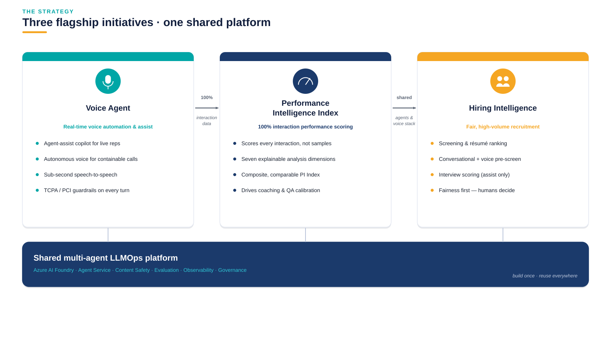
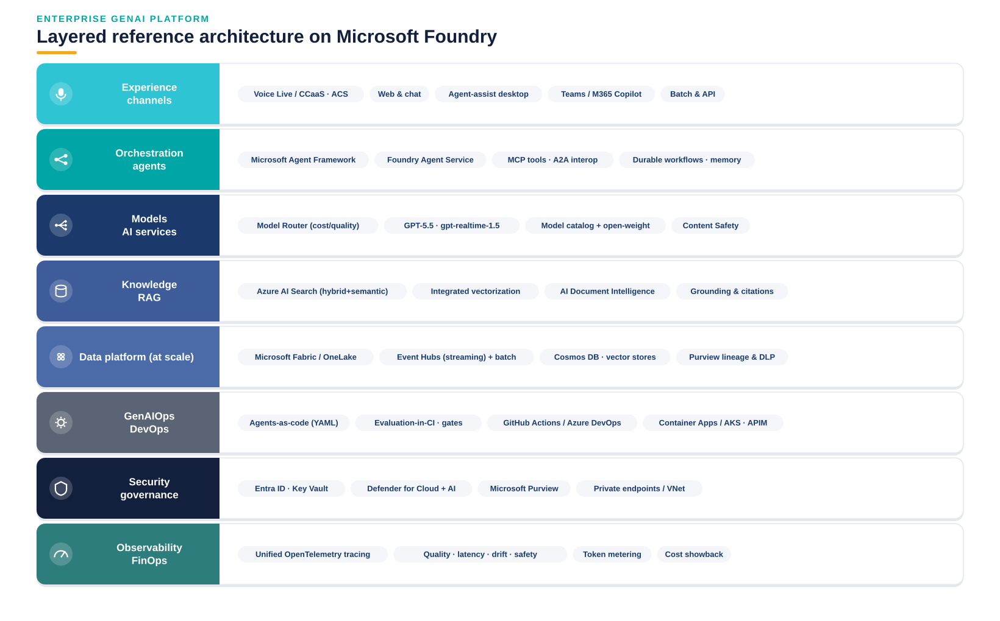
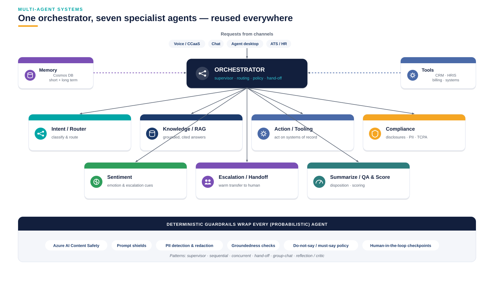
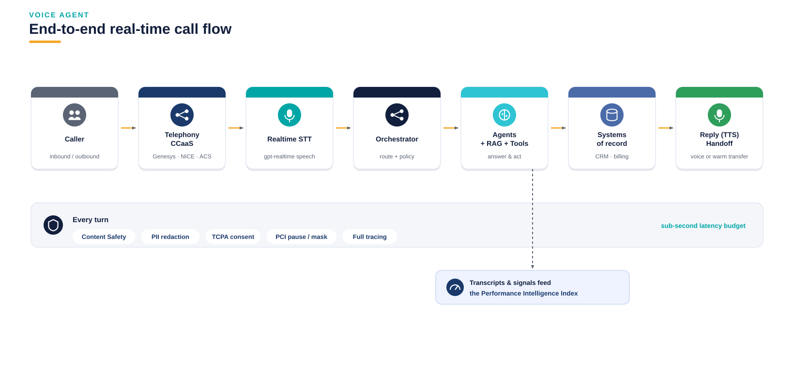
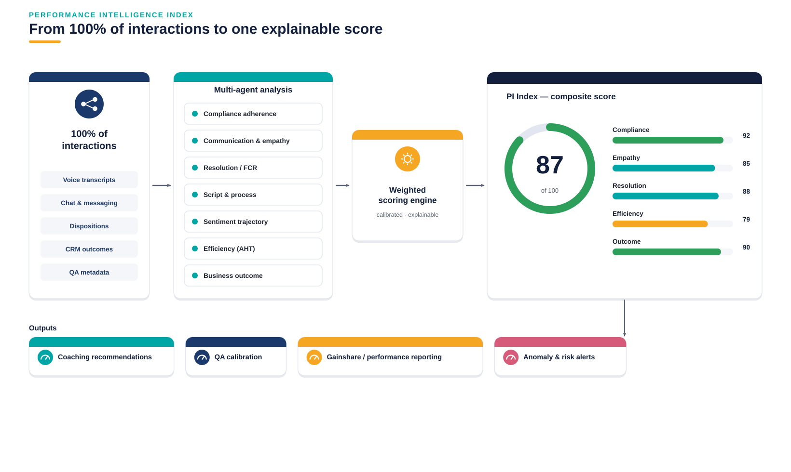
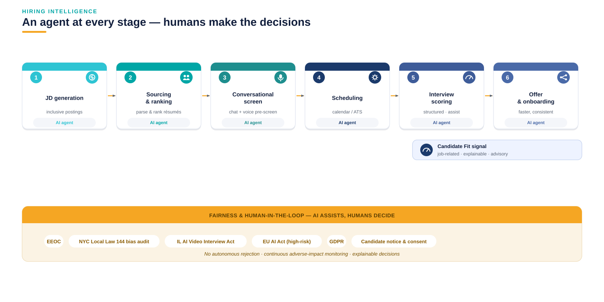
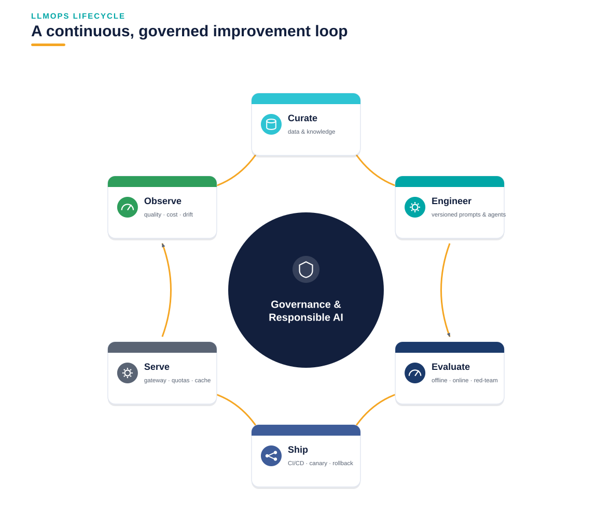
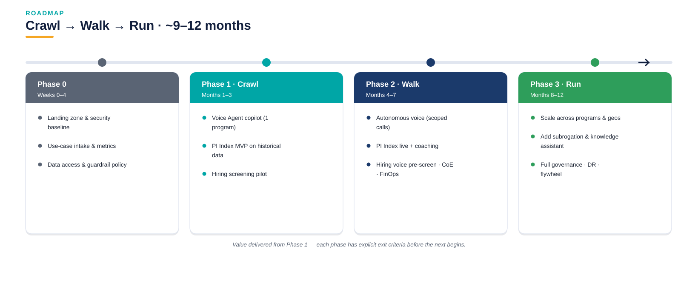

One secure, governed Azure platform powering three flagship initiatives — Voice Agent, the Performance Intelligence Index, and Hiring Intelligence.
AFNI's economics are driven by the cost and quality of high-volume voice interactions and the cost and speed of hiring the people who handle them. This proposal targets both — before AI-native competitors reprice the market.
Voice Agent generates real-time automation and interaction data; the Performance Intelligence Index turns 100% of that data into performance intelligence; Hiring Intelligence reuses the same agents and voice stack to hire the workforce. Build once, reuse everywhere.

Each layer has a clear responsibility and named Azure services, so every initiative composes from shared building blocks rather than bespoke stacks.

A supervisor routes work to specialist agents with narrow, testable responsibilities. Deterministic guardrails wrap the probabilistic agents. The same pattern serves all three initiatives.

Delivered in three modes, sequenced from lowest to highest risk, with guardrails on every turn.

| KPI | Baseline | Target * |
|---|---|---|
| Containment / deflection | Manual IVR | 20–40% of eligible calls |
| Average Handle Time | Program baseline | 15–25% reduction |
| QA coverage | 2–10% sampled | 100% (via PI Index) |
* Illustrative — replaced with AFNI actuals in discovery.
Analysis agents score every interaction across seven dimensions; a calibrated, explainable engine rolls them into one composite PI Index per agent, team, program and client — replacing sampled QA.

The platform applied to AFNI's own high-volume hiring, with fairness and human-in-the-loop throughout.

Curate → engineer → evaluate → ship → serve → observe → feed back. Governance and Responsible AI wrap the entire loop; evaluation gates block regressions before they reach customers.

Value is delivered from Phase 1; each phase has explicit exit criteria.

Lock the foundations and launch the first pilots across all three initiatives.
Lock the three initiatives & success metrics with Ops and HR leaders.
Azure landing zone, security baseline & guardrail policy.
Use-case intake & risk-tiering; secure data access.
Voice Agent copilot, PI Index MVP & Hiring screening pilot.